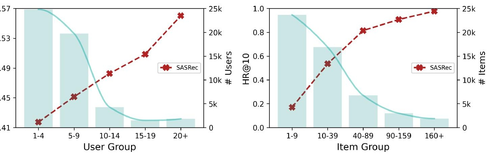
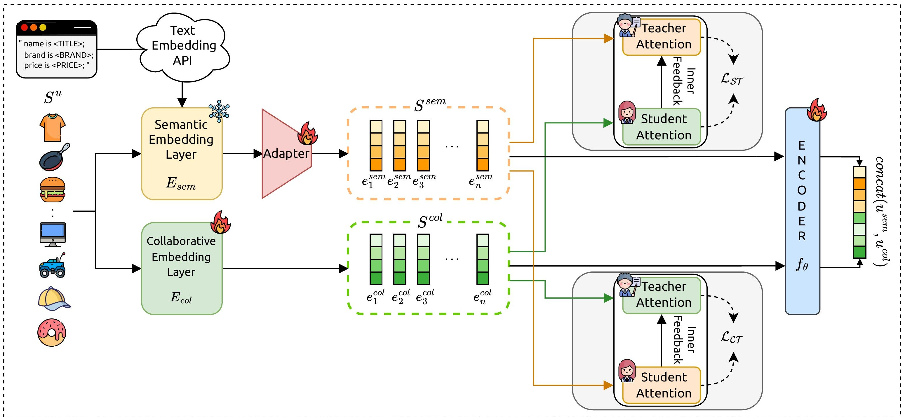
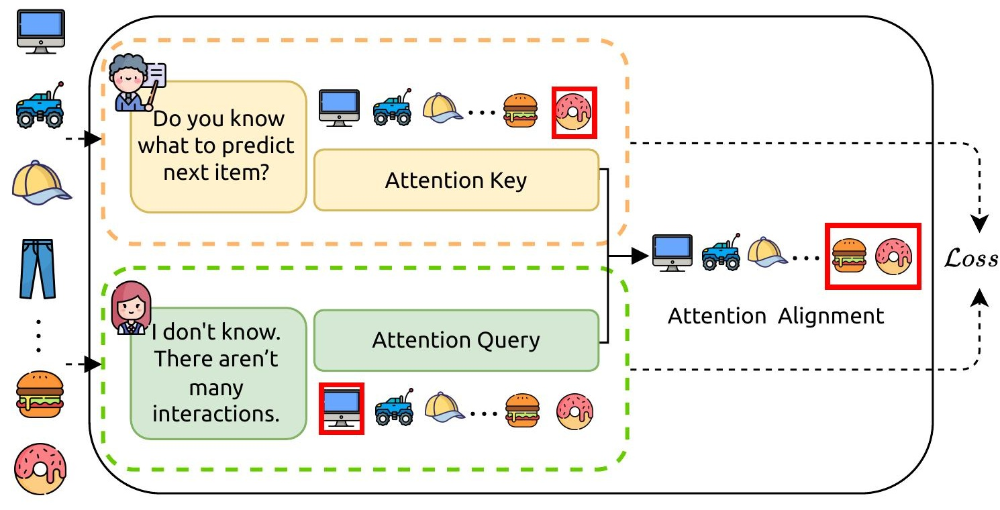
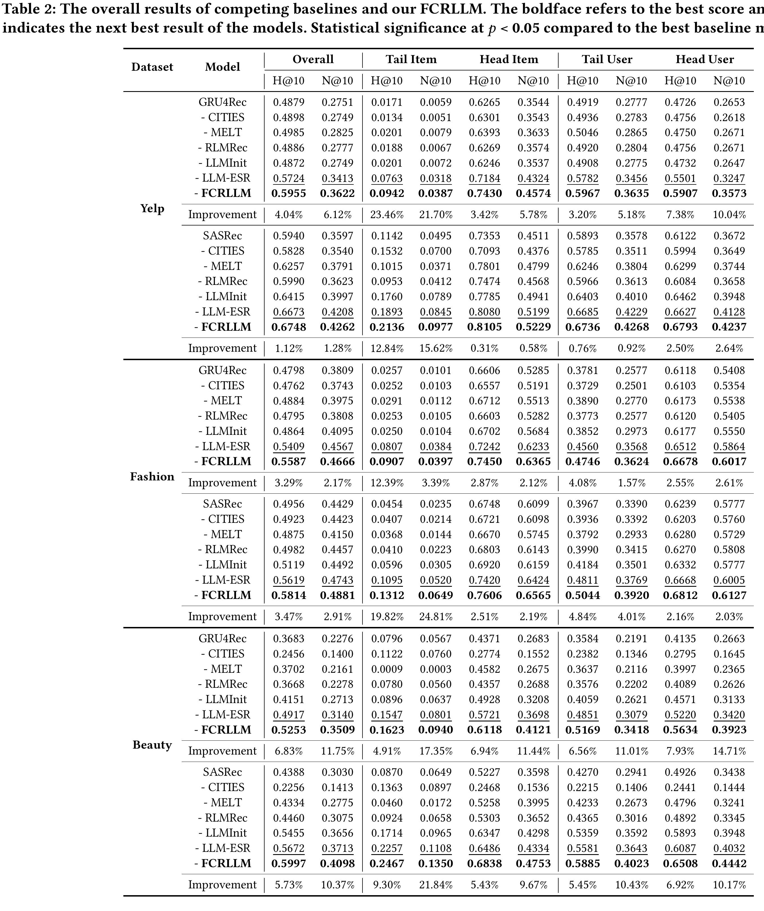
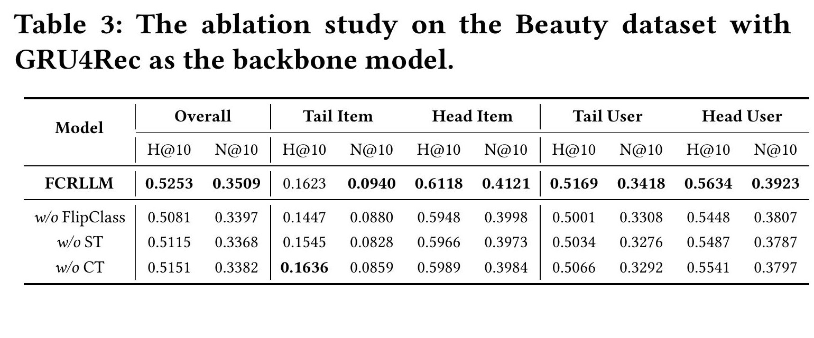
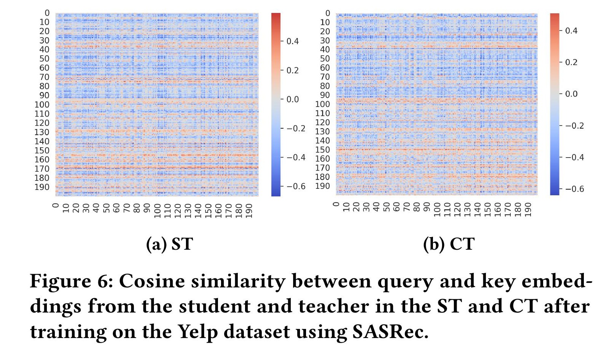

FCRLLM: Aligning LLM with Collaborative Filtering for Long-tailed Sequential Recommendation
1. 背景和问题
论文入口和阅读定位
FCRLLM 是一篇面向长尾序列推荐的 WWW 2026 论文，完整题目是 FCRLLM: Aligning LLM with Collaborative Filtering for Long-tailed Sequential Recommendation，作者为 Byungmoon Heo、Namjun Lee、Seonah Kim 和 Jaekwang Kim。论文的正式入口是 ACM DOI 10.1145/3774904.3792565，会议记录为 Proceedings of the ACM Web Conference 2026，页码 6574-6585。它不是把 LLM 当作生成式推荐器来直接生成 item id，而是把 LLM 的物品语义知识压缩成冻结的文本嵌入，再和传统 collaborative filtering 的交互表示一起训练序列推荐模型。阅读这篇论文时，最重要的线索不是“LLM 是否更强”，而是“LLM 的语义表征怎样和 CF 的交互表征对齐”。
论文处理的是 next-item prediction。给定用户集合 $\mathcal{U}$、物品集合 $\mathcal{I}$，以及用户 $u$ 的历史序列 $S_u=(i_1^u,\ldots,i_{|S_u|}^u)$，模型要估计下一次交互物品的概率：
在标准序列推荐里，GRU4Rec、SASRec 这类模型主要依赖历史交互学习 item embedding 和用户状态。问题在于，真实推荐数据并不是均匀稠密的：少数热门物品和高活跃用户贡献大量训练样本，绝大多数物品和用户只留下很短或很少的交互。这种长尾性会让协同信号在尾部区域变得稀疏，尾部 item 的 embedding 更新次数少，尾部 user 的行为序列短，传统 CF 模型很难靠交互共现学到稳定表示。
论文采用 Pareto-style 的头尾划分：按交互量或序列长度排序，前 20% 作为头部，其余作为尾部。形式上可以写成：
这一定义很朴素，但它把论文的目标说清楚了：FCRLLM 不是只追整体 H@10/N@10，而是要同时观察 tail item、head item、tail user、head user。长尾推荐的难点也因此变成两个层面：第一，模型是否能提升尾部区域；第二，提升尾部时是否牺牲头部区域。如果只是把语义嵌入直接拼进去，有可能尾部有所改善，但头部协同模式被扰乱；如果只优化头部整体指标，模型又可能继续偏向热门物品。

图 1 是这篇论文最直接的问题动机。左侧用户组和右侧物品组都呈现明显长尾：浅色柱表示样本数量集中在低频区，红色折线表示 SASRec 的 H@10 随频次增加而上升。换句话说，不是所有用户和物品都给模型提供同等强度的训练信号，越靠近尾部，协同过滤越难得到可靠模式。该图的关键不是单纯说明“数据长尾”，而是把数据长尾和推荐质量下降放在一起：低活跃用户的短序列让模型难以判断偏好，低频物品的少量交互让 item embedding 训练不足。FCRLLM 后续引入 LLM 语义信息，就是为了给这些低频对象提供一个不完全依赖交互次数的补充视角。更重要的是，图中性能折线和样本柱的方向相反，说明训练数据最多的区域并不是模型最需要补救的区域；若只优化全局平均损失，模型自然会把容量更多分给头部，而尾部问题会被整体指标掩盖。
为什么直接加入 LLM 语义不够
LLM 对推荐系统的吸引力在于，它能从文本元数据中提取语义相似性。以 Yelp、Amazon Fashion、Amazon Beauty 这类数据为例，物品名称、类别、品牌、价格、描述等信息可以被语言模型编码成一个语义向量。对尾部物品来说，即使历史交互很少，文本信息仍然可能说明它属于什么品类、适合什么场景、和哪些热门物品语义接近。因此，LLM embedding 是长尾推荐的一种自然补充。
但论文指出，LLM 语义表示和 CF 协同表示来自不同模态和不同优化目标。语义表示来自文本语料和语言模型预训练，关心的是语义相关性；协同表示来自用户行为序列，关心的是交互转移、共现偏好和推荐目标。两者在几何空间上可能相近，也可能冲突。例如，两个物品文本上相似，但用户实际连续购买关系很弱；也可能两个物品文本类别不同，却在某个场景下经常被同一类用户连续消费。如果模型简单把语义向量和协同向量拼接，然后用排序损失训练，语义流和协同流各自形成的注意力模式可能不同步，尾部数据反而更容易放大这种错配。
FCRLLM 的问题意识就落在这里：不是“是否使用 LLM embedding”，而是“怎样让 LLM 语义和 CF 协同信号在序列推荐里形成可训练、可解释、可推理时低成本的对齐”。论文把这个目标命名为 aligning LLM with collaborative filtering，并提出 FlipClass 机制。FlipClass 的核心思想来自课堂隐喻：有时语义流像老师，因为它拥有外部知识；有时协同流也可以像老师，因为它拥有真实行为信号。模型不固定让一方单向蒸馏另一方，而是让 semantic teacher 到 collaborative student、collaborative teacher 到 semantic student 两个方向都发生对齐。
论文贡献的真实边界
这篇论文的贡献可以概括为三点。第一，构建了一个双流序列推荐框架：语义流使用 LLM 物品文本嵌入，协同流使用传统可训练 item embedding，两者共享序列编码器并共同打分。第二，提出 FlipClass 对齐模块，用 energy-based teacher update 动态调整 teacher attention，使 teacher 更好反映 student query 的注意力需求。第三，在 Yelp、Fashion、Beauty 三个公开数据集和 GRU4Rec、SASRec 两类 backbone 上，展示整体、尾部物品、尾部用户、头部物品、头部用户的分组提升。
它的边界也要明确。论文使用的是 text-embedding-ada-002 生成的冻结文本嵌入，并不比较 2026 年以后更新的 embedding 模型，也没有在线 A/B 或工业候选集评估。实验采用 100 random negatives，这和全量召回排序或线上混排口径不可直接等价。PDF 文本中提到实现代码 available here，但本轮从 PDF 文本里没有解析出稳定 URL，因此代码可用性暂记为未核验。对工程复现者来说，这篇论文更像一个“语义-协同对齐模块”的研究原型，而不是完整推荐系统解决方案。
2. 方法
2.1 任务定义和整体框架模块
FCRLLM 仍然站在序列推荐的标准问题上。用户 $u$ 的历史序列被截断或填充到最大长度，模型读取前 $k$ 个物品后预测第 $k+1$ 个物品。论文没有重新定义推荐目标，而是在 item/user 表示层面引入两条并行路径。第一条是 semantic stream，输入来自 LLM 文本嵌入；第二条是 collaborative stream，输入来自交互学习到的 item embedding。两条路径最后都会进入序列编码器，得到用户的语义序列表示和协同序列表示。

图 2 展示了 FCRLLM 的完整结构。左侧是物品文本元数据，经过 text embedding API 得到 $E_{LLM}$，再通过 semantic embedding layer 和 adapter 形成语义序列 $S^{sem}$；下方是 collaborative embedding layer，形成协同序列 $S^{col}$。两条序列进入共享 encoder $f_\theta$，并在右侧进入两个 FlipClass classroom。上方 classroom 对应 semantic teacher 到 collaborative student，下方 classroom 对应 collaborative teacher 到 semantic student。图中最容易忽略的是推理链路：FlipClass 主要是训练时对齐 attention 的机制，最终推荐打分仍然来自 encoder 输出的双流用户表示和物品表示。这使它避免了在线请求 LLM，也避免了把 teacher update 直接带入服务端推理开销。
这个框架的实际目标是保留两种信号的互补性。协同流负责捕捉用户行为中的转移关系和群体偏好，语义流负责补足交互稀疏物品的文本先验。共享 encoder 的设计意味着两条流会经过相同的序列建模函数，从而减少结构差异；但共享 encoder 并不能自动解决注意力错配，所以论文进一步引入 FlipClass 对 teacher/student attention 做动态对齐。
2.2 语义流：冻结 LLM 表示和 adapter 模块
语义流从物品文本开始。论文为不同数据集构造结构化 prompt，把 item title、category、brand、price、description 等字段组织成自然语言描述，然后用 text-embedding-ada-002 生成物品级语义嵌入。所有物品嵌入组成矩阵：
这个矩阵是预先计算并缓存的，训练过程中保持冻结。冻结的好处是训练成本低、推理稳定，也能避免小规模推荐数据把 LLM embedding 过度拉偏；坏处是模型不能端到端修正文本嵌入里的领域偏差。为了把 LLM embedding 映射到推荐模型维度，论文使用两层 MLP adapter：
这里 $e_i^{llm}$ 是 LLM embedding，$e_i^{sem}$ 是推荐空间里的语义物品向量。用户序列中的每个 item 都可以查到对应 $e_i^{sem}$，从而形成语义序列 $S^{sem}$。该序列进入共享 encoder $f_\theta$，得到语义用户表示：
符号解释：$S^{sem}$ 表示用户序列中每个物品的语义向量序列，$f_\theta$ 是共享序列编码器，$u^{sem}$ 是语义视角下的用户状态。
语义流的价值主要在尾部物品。即使一个物品只有很少交互，它的文本描述仍然可以让模型知道它属于护肤品、鞋服、餐馆类别或某个价格带。对用户短序列来说，语义流也能把少量点击扩展成更丰富的偏好描述。但是语义流不能替代协同流，因为文本相似不等于用户行为相似。两个物品都叫“running shoes”，但不同品牌、价格、场景和用户群体会产生完全不同的转移模式；两个餐馆语义相似，也不意味着用户会在同一会话中连续访问。
2.3 协同流：可训练 item embedding 和语义初始化模块
协同流保留传统推荐模型的核心做法：每个 item 有一个可训练 embedding。所有 item 的协同嵌入组成矩阵：
论文没有完全随机初始化 $E_{col}$，而是用缓存的语义嵌入矩阵做 PCA 投影，将高维 LLM embedding 压到推荐维度后作为 collaborative embedding 的初始化。这一步很重要，因为它给协同流一个语义先验，让长尾 item 在训练初期不至于完全靠少量交互随机游走。但初始化之后，$E_{col}$ 是可训练的，它会被排序损失和 FlipClass 对齐损失共同更新，逐步吸收真实交互模式。
协同序列 $S^{col}$ 同样输入共享 encoder：
符号解释：$S^{col}$ 是由可训练协同物品向量组成的用户历史序列，$u^{col}$ 是协同视角下的用户状态；它和 $u^{sem}$ 使用同一个 $f_\theta$ 生成。
这里的 $f_\theta$ 可以是 GRU4Rec 或 SASRec 这样的序列 backbone。论文在两类 backbone 上都实验，是为了说明 FCRLLM 不是依赖某个特定序列结构的 trick，而是可以附着在循环式和 Transformer 式序列模型上。共享 encoder 的选择也让语义流和协同流在结构层面对齐：它们经过同样的序列建模方式，但输入 embedding 不同。
2.4 双流打分和排序目标模块
FCRLLM 的最终打分不是只用语义向量，也不是只用协同向量，而是把物品和用户的语义/协同表示拼接：
符号解释：$e_i^{sem}$ 与 $e_i^{col}$ 分别是候选物品的语义向量和协同向量，$u^{sem}$ 与 $u^{col}$ 分别是用户历史的语义状态和协同状态，$Concat$ 表示向量拼接。
这个公式说明两个要点。第一，语义 item 向量和协同 item 向量都直接参与候选打分；第二，用户侧也保留语义序列状态和协同序列状态。它不是把 LLM embedding 作为辅助特征喂给一个黑盒层，而是显式维持双视角表示。这样的结构能让尾部 item 从语义侧获得表示质量，同时让头部 item 继续利用丰富协同信号。
训练目标使用 pairwise ranking。对用户历史中的每个位置，给定正样本 $i_{k+1}^{u+}$ 和负样本 $i_{k+1}^{u-}$，排序损失可以写作：
符号解释：$i_{k+1}^{u+}$ 是真实下一个物品，$i_{k+1}^{u-}$ 是负采样物品，$P(\cdot)$ 是双流打分函数，$\sigma$ 是 sigmoid 函数。
如果只有这部分，FCRLLM 会退化成“LLM embedding + CF embedding 的双流拼接模型”。论文认为这还不够，因为 ranking loss 只约束最终打分，不能保证两条流内部的 attention pattern 一致或互补。在长尾区域，语义流可能基于文本把某些物品拉近，协同流可能基于少量行为把另一些物品拉近，最终拼接虽然能学习一个分数，但中间表示可能仍然冲突。因此，FlipClass 是论文方法的关键。
2.5 FlipClass 双向 teacher-student 对齐模块
FlipClass 的直觉来自课堂场景。传统 classroom 里，老师掌握知识，学生提出问题，老师根据学生问题调整讲解。论文把这一点迁移到推荐表示对齐：teacher 不是静态地把自己的表示蒸馏给 student，而是根据 student query 动态更新 teacher key，使 teacher attention 更贴近 student 当前需要学习的模式。

图 3 用一个形象例子说明 FlipClass。上方 teacher 知道用户可能预测下一个 item 的知识，下方 student 因为交互稀疏而不确定；student 的 attention query 暴露了它当前缺什么，teacher 的 attention key 需要根据这个 query 调整，然后通过 alignment loss 把两者拉近。该图的重点不是“老师教学生”这个比喻，而是 teacher 本身会被更新：FCRLLM 不把语义流当作永远正确的老师，也不把协同流当作永远正确的老师。ST 中，语义 teacher 辅助协同 student，适合长尾 item 缺少交互的场景；CT 中，协同 teacher 反过来约束语义 student，避免文本语义偏离真实用户行为。两个方向都保留，才能同时利用外部语义知识和内部交互事实。
这种双向设计比普通 distillation 更谨慎。普通蒸馏往往隐含一个前提：teacher 更强、更可靠，student 应该模仿 teacher。但在推荐里，这个前提不总成立。LLM 语义可能知道“这两个商品文本相似”，却不知道用户在购物路径中是否会连续购买；CF 可能知道“这两个 item 常被同一类用户点击”，却因为尾部交互太少而对新 item 判断不稳。FCRLLM 让两边轮流扮演 teacher/student，本质上是承认两种信号都有盲区。
2.6 Hopfield energy-inspired teacher update 模块
论文把 FlipClass 的 teacher update 和 Hopfield network 的 energy minimization 联系起来。经典 modern Hopfield network 可以把 query pattern 拉向存储 pattern，能量函数的一种写法是：
符号解释：$\xi$ 是待更新的 query pattern，$X$ 是存储的 pattern 矩阵，$\beta$ 控制 softmax sharpness，$c$ 是不影响梯度方向的常数。
其中
在 FCRLLM 里，student query 可以理解为当前需要对齐的模式，teacher key 可以理解为存储的知识模式。论文不是直接用 Hopfield 网络替换推荐模型，而是借用 energy-based formulation 来设计 teacher key 的更新规则。teacher key 更新后，student attention 和 teacher attention 之间的差异会被 alignment loss 约束。
论文进一步引入 teacher prior，避免 teacher key 被 student query 过度牵引。直观地说，如果 teacher 只追随 student，就会失去 teacher 的知识属性；如果 teacher 完全不动，又不能适应 student 的稀疏查询。因此更新要在两者之间平衡：一方面 teacher 要靠近 student query 暴露出的需求，另一方面 teacher 自身的 key norm 和稳定性要受到 prior 约束。超参数 $\alpha$、$\beta$、$\gamma_{update}$ 在这里分别控制 teacher key 的正则强度、softmax 温度和 teacher attention 更新幅度。
这部分数学在 PDF 文本里排版较密，但可以抓住三层含义。第一，FlipClass 对齐的对象不是最终 item score，而是 attention 里的 query/key 模式。第二，teacher 不是固定表示，而会被 energy-inspired update 动态调整。第三，ST 和 CT 各自独立训练，因此它们可以学习不同的对齐结构，而不是共享一个对称损失。
2.7 ST 与 CT 双课堂模块
FCRLLM 的两个 classroom 分别是 ST 和 CT。ST 可以理解为 semantic teacher and collaborative student：语义流拥有 LLM 外部知识，协同流在长尾交互稀疏时需要借助语义模式补足。对于尾部物品，ST 尤其重要，因为协同 embedding 更新次数少，语义 teacher 能提供类别、品牌、描述等先验。
CT 则反过来：collaborative teacher and semantic student。这个方向的价值是防止语义流脱离真实行为。LLM embedding 可能把文本相似物品拉得很近，但推荐系统真正关心的是用户下一步行为。如果真实用户并不把这些物品当作可替代或连续消费对象，那么语义相似并不应该直接转化为推荐相似。CT 让协同 teacher 把行为中的转移模式传给语义 student，使语义流不只是语言空间里的相似性，而是逐步适配推荐任务。
最终训练目标是三部分相加：
符号解释：$\mathcal{L}_{Rank}$ 负责最终排序，$\mathcal{L}_{ST}$ 负责语义 teacher 到协同 student 的对齐，$\mathcal{L}_{CT}$ 负责协同 teacher 到语义 student 的反向对齐。
这里 $\mathcal{L}_{ST}$ 和 $\mathcal{L}_{CT}$ 不是替代 ranking loss，而是约束中间 attention 的辅助目标。它们服务于最终推荐排序，但不直接在推理时增加复杂 teacher update。论文的服务逻辑因此比较清晰：训练阶段多做对齐，推理阶段只保留已经被对齐过的双流表示。
2.8 工程实现和复现检查模块
从实现角度看，FCRLLM 的成本主要发生在三个地方。第一是离线语义嵌入生成。论文使用 text-embedding-ada-002，并缓存所有物品的 embedding。只要物品文本不频繁变化，这一步可以作为离线特征生产流程。第二是训练阶段的双流 encoder 和 FlipClass 对齐。共享 encoder 节省了一部分参数，但两条 stream 和两个 classroom 会增加训练计算。第三是推理阶段的候选打分。由于语义嵌入已经缓存、FlipClass 不进入推理，线上成本接近“多一套 item/user 表示拼接”的模型，而不是实时 LLM 推荐。
复现时应重点检查几个点。首先，item 文本字段如何构造 prompt 会直接影响语义 embedding；附录 Figure 7 给出不同数据集的 prompt template，但不同业务数据可能没有同样字段。其次，PCA 初始化协同 embedding 是一个容易被忽略的细节，若改成随机初始化，长尾冷启动和收敛过程可能变化。再次，$\alpha$、$\beta$、$\gamma_{update}$、$\gamma_{fc}$ 不是装饰性超参，论文在不同数据集和 backbone 上的最佳组合不同。最后，评估使用 100 random negatives，这会影响绝对指标数值，和全量候选排序的线上指标不能直接比较。
还有一个容易被低估的实现约束是负样本和 batch 内序列位置。FCRLLM 的 ranking loss 按序列前缀训练，因此语义流和协同流在每个时间步都要能取到同一条历史的两种表示；如果工程里只在样本级拼接最终 user embedding，而没有让两条流在序列层面对齐，FlipClass 的 query/key 关系就会退化。另一个约束是 embedding 缓存版本：语义矩阵一旦更新，PCA 初始化、adapter 输入分布和已有协同 embedding 都会变化，所以真实系统里需要把 embedding 版本写入训练配置和模型元数据。否则，同一个 item id 在离线训练、增量训练和线上推理中可能对应不同语义向量，长尾物品的提升会变得不可复现。
从 ablation 的角度看，FCRLLM 方法部分可以拆成三个递进基线：只用协同流是普通序列推荐；加入语义流但不加 FlipClass，是 LLM embedding 增强的双流推荐；再加入 ST/CT，才是完整 FCRLLM。这个拆分对复现实验很有用，因为它能区分收益来自文本先验、协同初始化，还是动态注意力对齐。论文的贡献主要落在第三层，但前两层是必要基础。
3. 实验结果
数据集、基线和评估口径
论文使用三个真实数据集：Yelp、Amazon Fashion、Amazon Beauty。Yelp 有 15,720 个用户、11,383 个物品、192,214 条交互，平均序列长度 12.23；Fashion 有 9,094 个用户、4,722 个物品、34,759 条交互，平均序列长度 3.82；Beauty 有 52,204 个用户、57,289 个物品、394,908 条交互，平均序列长度 7.56。Fashion 平均序列最短，因此对用户侧稀疏更敏感；Beauty 物品数最多，也更能检验尾部物品表现。
基线分为三类。第一类是 backbone 模型 GRU4Rec 和 SASRec，用来观察 FCRLLM 是否能在经典序列模型上带来增益。第二类是长尾推荐方法 CITIES 和 MELT，强调稀疏用户/物品处理。第三类是 LLM 推荐相关方法，包括 RLMRec、LLMInit 和 LLM-ESR，用来比较语义增强路线。指标为 Hit Ratio@10 和 NDCG@10，评估时每个正样本配 100 个随机负样本。
主结果：整体提升和长尾提升同时出现

表 2 是论文的主证据。它不是只报告 overall，而是按 tail item、head item、tail user、head user 拆分 H@10/N@10。这样的表格很长，但它正好对应论文问题：如果 FCRLLM 只在整体指标上提升，而尾部不提升，那么长尾叙事就站不住；如果只提升尾部但头部大幅下降，也不能证明方法适合真实推荐系统。表中 FCRLLM 在三组数据和两类 backbone 上都达到最优或接近最优，尤其在 Beauty+GRU4Rec 上，overall H@10/N@10 为 0.5253/0.3509，相对最佳基线提升 6.83%/11.75%；Beauty+SASRec 上为 0.5997/0.4098，相对最佳基线提升 5.73%/10.37%。论文还强调跨所有数据集和 backbone，尾部物品平均提升 H@10 13.7%、N@10 17.2%，这说明语义-协同对齐确实主要作用在长尾稀疏区域。
从表 2 还可以看到，FCRLLM 的优势不是只来自“加了 LLM embedding”。LLMInit 也使用语义初始化，LLM-ESR 也是双视角框架，但 FCRLLM 在多个切片上继续领先，说明 FlipClass 对齐机制贡献了额外收益。尤其在尾部 item 上，语义信息本身当然重要，但如果语义流和协同流没有被正确对齐，文本相似未必转化为推荐收益。FCRLLM 的主结果支持这样一个判断：长尾推荐里的 LLM 价值不应只理解为“给 item 添加文本 embedding”，还应理解为“用文本先验去修复协同表示的稀疏区域，同时让文本先验服从真实交互”。
消融：FlipClass、ST、CT 都有作用

表 3 检验 Beauty+GRU4Rec 上的消融。完整 FCRLLM 的 overall H@10/N@10 为 0.5253/0.3509；去掉整个 FlipClass 后降到 0.5081/0.3397；只去掉 ST 后为 0.5115/0.3368；只去掉 CT 后为 0.5151/0.3382。这说明 FlipClass 不是可有可无的正则项，ST 和 CT 两个方向也都提供了有效约束。注意表中某些单个格子并非完整模型绝对最高，例如 tail item H@10 在 w/o CT 行略高于完整模型，但完整 FCRLLM 在整体、head item、tail user、head user 和多个 N@10 指标上更稳。更合理的读法是：双向对齐追求整体和分组之间的均衡，而不是牺牲其他区域去冲某一个尾部格子的单点数值。
这个消融结果对工程实现有启发。如果只做 ST，模型容易把语义 teacher 视为主要知识源，可能改善尾部物品，却让语义空间的偏差进入协同流。如果只做 CT，模型会更服从历史行为，但对少交互物品的语义补足不足。完整 FCRLLM 让两个方向共同训练，等于把“外部语义知识”和“内部协同事实”做成双向校正。对于业务推荐系统，这比单向蒸馏更安全，因为推荐数据里的文本字段质量和行为稀疏程度都可能随类目变化。
超参数、分组分析和对齐行为
论文在 Beauty+SASRec 上分析 $\alpha$、$\beta$、$\gamma_{update}$、$\gamma_{fc}$。$\alpha$ 控制 teacher key 的 L2 penalty 强度，$\beta$ 控制 attention sharpness，$\gamma_{update}$ 控制 teacher update 幅度，$\gamma_{fc}$ 控制 FlipClass alignment loss 在总损失中的权重。附录 Table 4 显示，不同数据集和 backbone 的最佳组合并不相同：例如 Beauty+SASRec 使用 $\alpha=0.5$、$\beta=0.3$、$\gamma_{update}=0.7$、$\gamma_{fc}=1.0$，而 Beauty+GRU4Rec 使用 $\alpha=0.3$、$\beta=0.3$、$\gamma_{update}=0.3$、$\gamma_{fc}=0.5$。这意味着 FlipClass 不是一个完全免调模块，训练时需要针对数据稀疏度和 backbone 做验证。
论文还做了更细粒度的用户/物品分组分析。Figure 5 显示，在 Beauty+SASRec 上，FCRLLM 在所有 user group 和 item group 上都优于基线。这个结果和 Table 2 的 head/tail 切片相互补充：Table 2 证明二分头尾有效，Figure 5 说明优势不是只集中在一个粗粒度尾部桶，而是沿着交互频次变化仍然稳定。论文解释说，SASRec 这类协同模型会更频繁更新热门 item，因此在头部区域表现较强；FCRLLM 通过语义补足和双向对齐，在低频 item 区域保持优势，同时没有破坏高频 item 的表现。

图 6 是方法解释性最强的实验图。它展示训练后 ST 和 CT classroom 中 student query 与 teacher key 的 cosine similarity。两个热力图不是简单同构的：ST 和 CT 呈现不同的相似度纹理，说明两类对齐模块确实学习了不同模式。若 ST/CT 只是重复的对称损失，热力图应更接近；现在它们的结构差异支持论文的非对称设计。对推荐系统来说，这一点很关键：语义 teacher 到协同 student 的方向更像把外部知识注入稀疏行为表示，协同 teacher 到语义 student 的方向更像让文本空间服从真实序列偏好。两者互补，才解释了为什么消融里去掉任一方向都会损伤整体表现。
附录还给出两个有用补充。Table 5 比较 FlipClass、cosine alignment 和 KL alignment，在 Beauty+SASRec 上，FlipClass 的 overall H@10/N@10 为 0.5997/0.4098，高于 cosine 的 0.5716/0.3892 和 KL 的 0.5720/0.3740。这说明收益不只是来自“对齐”这个抽象动作，而是来自 energy-based teacher update 这类更细的动态对齐。Table 6 比较 Ada、Mpnet、T5 三种语义嵌入，Ada 最好，Mpnet 和 T5 次之。这说明语义 embedding 质量会影响最终效果，也提示复现者不能把 embedding 模型替换视为无风险改动。
结果解读中的注意事项
这篇论文的实验结论总体扎实，但有几个口径要单独标注。第一，100 random negatives 会让 H@10/N@10 的绝对值高于全量排序口径，因此不能把表格里的数值直接理解为线上 top-10 命中率。第二，数据集都是公开离线数据，缺少实时召回、冷启动曝光偏差、用户反馈延迟和多目标排序等工业复杂性。第三，语义文本质量在公开数据中相对结构化，真实业务里的标题、类目、商家描述、评论摘要可能噪声更大，需要额外清洗和 prompt 设计。第四，论文主要关注推荐准确性，没有系统评估多样性、公平性、可解释性展示或服务延迟。
因此，FCRLLM 的实验结论应理解为：在离线序列推荐设置中，冻结 LLM 语义嵌入配合双向 FlipClass 对齐，可以稳定提升整体和长尾切片指标；但要迁移到真实推荐系统，还需要重新验证 embedding 生产、候选集口径、特征更新频率、线上延迟和 A/B 收益。
4. 总结
核心价值
FCRLLM 的价值在于把“LLM 语义增强推荐”从简单特征拼接推进到表示对齐问题。它承认 LLM 语义和 CF 协同都不完美：语义能补足尾部稀疏，但可能不符合真实行为；协同符合行为，但在长尾区域缺数据。FlipClass 的双向 teacher-student 设计正是围绕这个矛盾展开，让 semantic teacher 和 collaborative teacher 轮流提供知识，并通过 energy-based update 动态适配 student query。
从推荐系统视角看，这篇论文最值得借鉴的不是具体使用 text-embedding-ada-002，也不是某个单一超参组合，而是三层设计原则。第一，外部语义知识应以可缓存、可审计的方式进入推荐模型，避免在线生成式推理成为服务瓶颈。第二，语义表示进入模型后不能只靠最终排序损失间接校正，中间 attention/representation 也需要任务化对齐。第三，长尾评估必须拆成用户侧和物品侧，且同时检查头部是否被破坏。
适用场景和不适用场景
FCRLLM 适合有结构化物品文本、交互长尾明显、序列行为可用的推荐场景。例如电商、内容消费、餐馆点评、兴趣 feed、长尾商品召回等，都可能受益于语义先验和协同对齐。它尤其适合 item 文本质量较高但交互覆盖不均匀的场景：长尾 item 虽然少被点击，但标题、类目、描述仍能提供稳定信号。
它不适合几个场景。若物品文本极度缺失或噪声很大，LLM embedding 可能引入错误先验；若业务主要是强实时短期兴趣，冻结语义 embedding 对会话突发意图帮助有限；若线上候选集和训练评估口径差异很大，离线 gains 不一定转化为线上收益；若系统已经有复杂多模态 item representation，FCRLLM 还需要和图像、视频、评论、知识图谱等表示一起重新设计对齐目标。
复现和后续跟进
复现这篇论文时，我会优先检查五件事。第一，重新构造 item prompt 并固定 embedding 缓存，确保不同数据集字段没有泄漏测试信息。第二，先复现不带 FlipClass 的双流模型，验证 LLM embedding 和 PCA 初始化本身带来的收益。第三，再加入 ST、CT 和完整 FlipClass，逐项复现 Table 3 的消融趋势。第四，在全量排序或更接近业务候选集的评估口径下重复 Table 2 的长尾切片，避免 100 random negatives 带来的过乐观。第五，记录推理阶段延迟和内存，因为双流表示会增加 item/user embedding 尺寸。
对长期研究来说，FCRLLM 还留下几个自然问题。可以把 text-embedding-ada-002 换成更新的 embedding 模型，观察语义质量和对齐难度如何变化；可以把 FlipClass 扩展到图像、视频、评论摘要等多模态表示；可以研究在线更新时 teacher/student 表示如何随新交互漂移；也可以把长尾目标从准确率扩展到多样性和覆盖率。论文最后提到未来会把 FlipClass 拓展到其他模态和更广推荐场景，这正是它最有潜力的方向。
一句话概括：FCRLLM 不是让 LLM 替代推荐模型，而是让 LLM 的语义先验和 CF 的行为事实通过双向动态对齐共同服务长尾序列推荐。它的贡献在于把“用 LLM 补长尾”落实成了可训练的 teacher-student attention alignment，并用主结果、消融和对齐热力图证明这条路径在离线公开数据上有效。